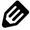
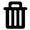

占位置 height：17px
问：什么情况下时，margin设置的距离才会重叠？
答：margin重叠是指上下重叠，隔开距离以数值大的为准。分两种情况:
(1)兄弟级的块之间（解决办法：float或者inline-block）；
(2)父子级的块之间（解决办法：父级加overflow：hidden或者加padding或者加border或者子级加position：absolute）。
 
问：伪类对象选择符中“:”和“::”有什么区别？
答：伪元素用“::”，伪类用“:”，但是，为了兼容过去的写法，伪元素 写成一个引号的形式，也可以被解析。
伪元素主要有：E:first-letter/E::first-letter E:first-line/E::first-line E:before/E::before E:after/E::after E::placeholder E::selection。
伪类主要有：E:link E:visited E:hover E:active E:focus E:lang(fr) E:not(s) E:root E:first-child E:last-child E:only-child E:nth-child(n) E:nth-last-child(n) E:first-of-type E:last-of-type E:only-of-type E:nth-of-type(n) E:nth-last-of-type(n) E:empty E:checked E:enabled E:disabled E:target @page:first @page:left @page:right
问：css问题3……
答：css答案3……
占位置 height：17px